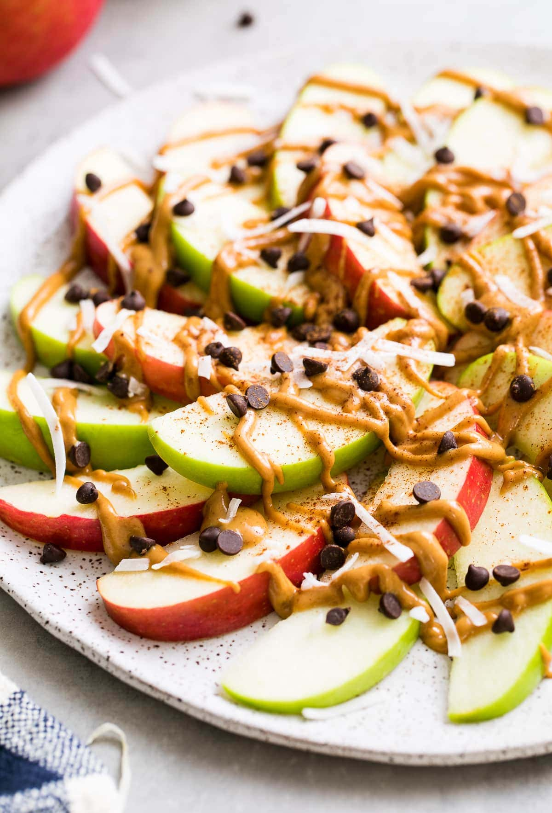

Apple Nachos
Quick・Kid-Friendly・No Cook
A fun and healthy way to enjoy apples, topped with nut butter, chocolate, and more!
Total Time
5 mins
Difficulty
Easy
Servings
1-2
Main Ingredients
Apple slices, nut butter, chocolate chips, granola, and optional toppings like coconut flakes or berries.
View Recipe